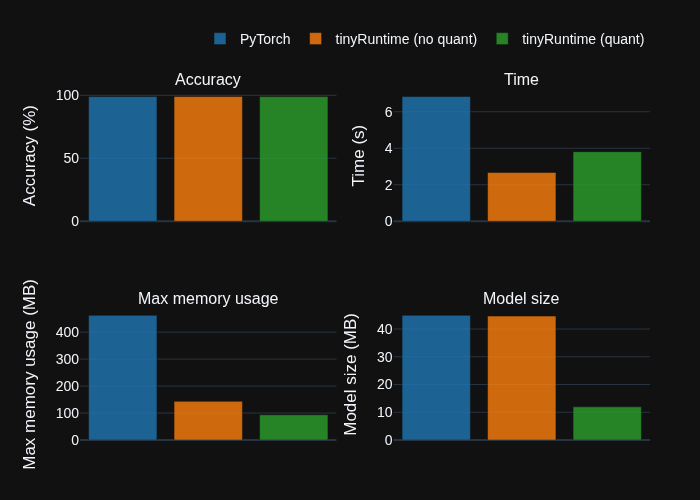
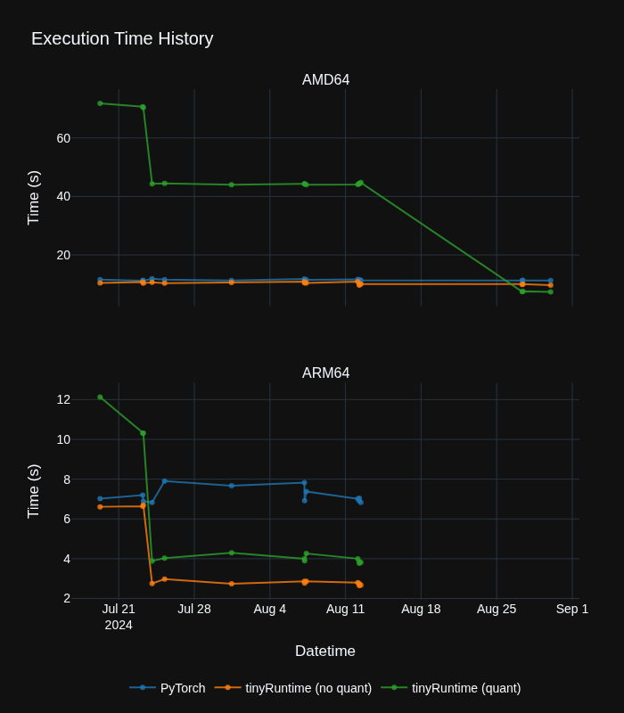
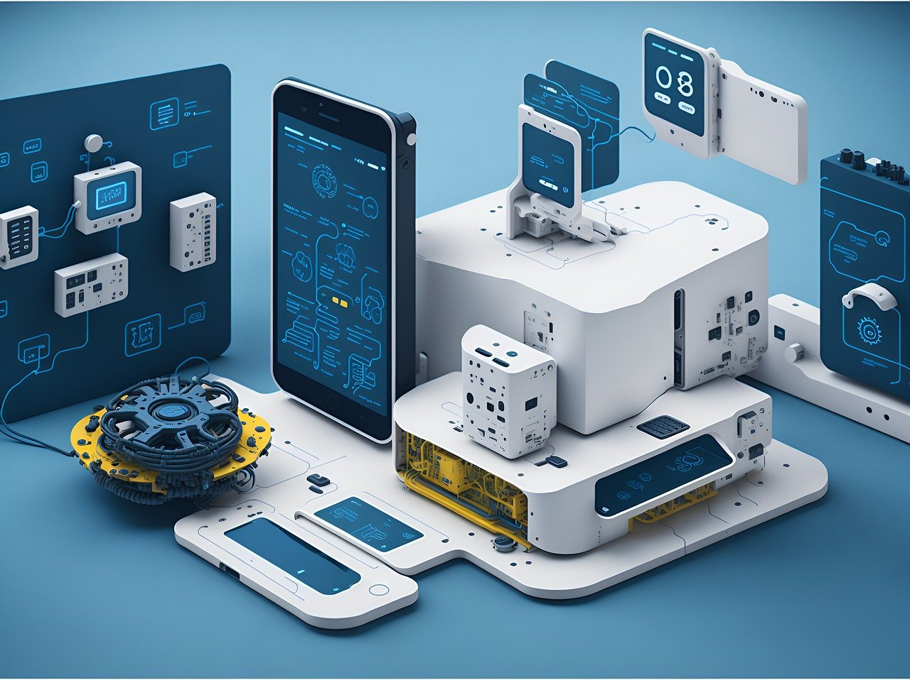
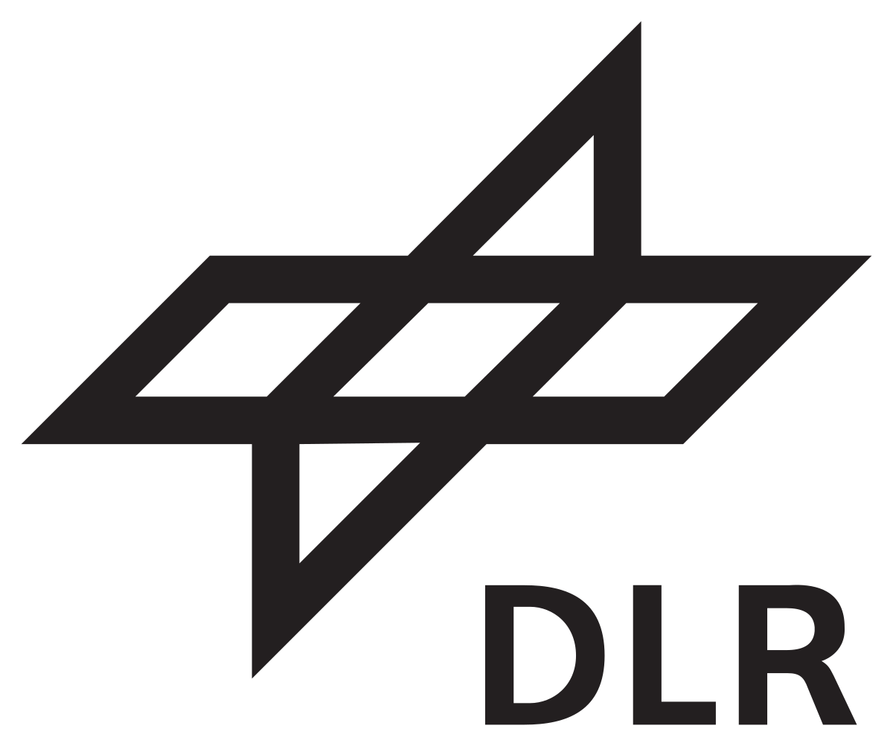

Distributed ML on Unikernel for IoT
Back in 2019, it felt almost extreme to run a Deep Neural Network on a Unikernel (MirageOS), written in a functional programming language (OCaml), running on a…
May 28, 2025
Run by NinjaLABO.
Our latest technology shows significant increase from baseline Pytorch runtime in terms of:
🚀 Model size
🚀 Running time
🚀 without largely lowering accuracy

We are constantly working to improve our technology! See our latest progress in Performance page.

We are a new frontier in the fields of AI and ML which allows for ML models to be run directly on small IoT devices such as microcontrollers, sensors, and other edge devices most notably without being dependent on a connection to the cloud – a noticeable advantage when compared to current AI & ML systems.

“Cloudless AI” doesn’t move the data around so that it could save network round trip time, communication cost and battery consumption.
“Cloudless AI” doesn’t upload the private data on Cloud but instead it processes in place, there is no risk of privacy leakage.
